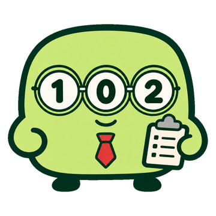
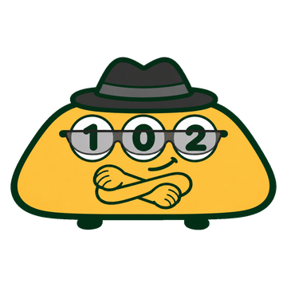
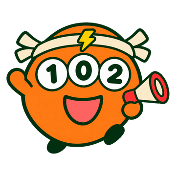
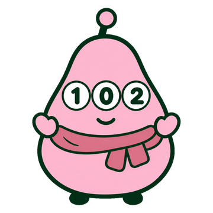
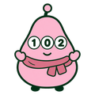

1等確率重視 · まじめな優等生
カクリ
「今回いちばん確率が高い100通りです。この中に13試合ぜんぶの結果が入る確率は0.35%と見ています。」
- 点数
- 100通り
- 引分
- 0〜2個
- 荒れ度
- 0〜4試合
サイトのおすすめの目の担当。モデルの確率がいちばん高い組み合わせを、目を選んでフィルタで絞る形で選びます。
性格のちがう5人が、毎回同じ1万円分（100通り前後）で第1672回を予想しています。同じデータを見ても、買い方しだいで目はこんなに変わります。

1等確率重視 · まじめな優等生
「今回いちばん確率が高い100通りです。この中に13試合ぜんぶの結果が入る確率は0.35%と見ています。」
サイトのおすすめの目の担当。モデルの確率がいちばん高い組み合わせを、目を選んでフィルタで絞る形で選びます。
統計重視 · データ好きの研究者
「過去の形どおり、引分2〜4個・人気どおりにいかない試合3〜5つの100通りにしたよ。」
過去の回の「形」からはみ出さない派。投票率で分けた5グループの数と、引分2〜5個の範囲に収まる目だけを選びます。

期待値重視 · クールな配当ハンター
「みんなが買わない目にこそ価値がある。人気どおりにいかない試合を5〜6つ入れた98通りだ。」
人と同じ目は買わない派。投票が少ないわりに起きやすい目を狙い、大穴を1つ以上・穴を4つ以上入れます。条件に合う目が作れない回は見送り。

荒れ好み · 明るいお祭り好き
「今回は人気どおりにいかない試合が7つ以上！ 99通りで番狂わせを待ってるよ〜」
番狂わせが大好き。投票の人気どおりにいかない試合が7つ以上ある目だけを選びます。

投票率どおり · のんびりした世間代表
「みんなが選んでる上から100通り。これでいいんじゃない？」
みんなの投票率どおりに買う派。投票率の積が大きい組み合わせから順に選ぶ、世間の予想の代表です。ほかの4人の物差しにもなります。
| No | 対戦 | カクリ | スタッツ | ハイトー | ドンデン |  ミンナ |
|---|---|---|---|---|---|---|
| 荒れ度人気どおりにいかない試合 | 0〜4 | 3〜5 | 5〜6 | 7 | 1〜4 | |
| 引分引分になる試合 | 0〜2 | 2〜4 | 2〜3 | 1〜4 | 1〜3 | |
| 1 | 町田-神戸 | 102 | 102 | 102 | 102 | 102 |
| 2 | C大阪-浦和 | 102 | 102 | 102 | 102 | 102 |
| 3 | 鹿島-横浜FM | 102 | 102 | 102 | 102 | 102 |
| 4 | 柏-川崎F | 102 | 102 | 102 | 102 | 102 |
| 5 | 新潟-宮崎 | 102 | 102 | 102 | 102 | 102 |
| 6 | 大分-栃木C | 102 | 102 | 102 | 102 | 102 |
| 7 | 札幌-鳥栖 | 102 | 102 | 102 | 102 | 102 |
| 8 | 仙台-秋田 | 102 | 102 | 102 | 102 | 102 |
| 9 | 今治-磐田 | 102 | 102 | 102 | 102 | 102 |
| 10 | 富山-徳島 | 102 | 102 | 102 | 102 | 102 |
| 11 | 八戸-いわき | 102 | 102 | 102 | 102 | 102 |
| 12 | 藤枝-甲府 | 102 | 102 | 102 | 102 | 102 |
| 13 | 大宮-山形 | 102 | 102 | 102 | 102 | 102 |
それぞれの点数の中で、表の目の組み合わせから条件に合うものだけを選んでいます（表の目をすべて掛け合わせた数より少なくなります）。予想は最初の試合の前日までに確定し、そのあとは変えません。
第1672回から記録を始めました。結果が出た回から、ここに5人の成績が並びます。
サイトの「おすすめの目」はカクリの予想と同じです。どの予想者も当せんを約束するものではありません。19歳未満の方はtotoを購入できません。